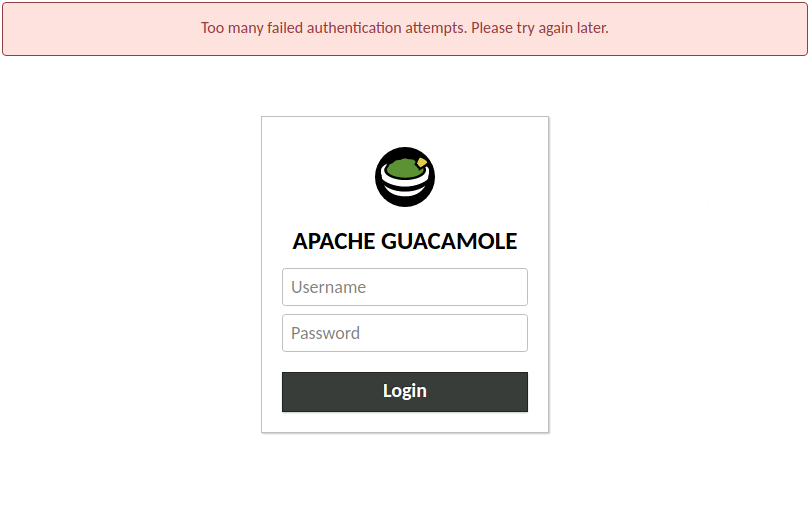

Securing Guacamole against brute-force attacks#
Version 1.6.0 of Guacamole introduces an extension that allows you to detect and block brute-force login attacks. When installed, the extension will track the IP addresses of failed authentication attempts. Once the threshold of failed logins is reached for a particular IP address, further logins from that address will be temporarily banned:

Warning
You will need to restart the Guacamole web application in order to complete configuration. Doing this will disconnect all active users, so please:
Do this only at a time that you can tolerate service unavailability, such as a scheduled maintenance window.
Keep in mind that configuration errors may prevent Guacamole from starting back up.
Installing/Enabling brute-force authentication detection#
Guacamole is configured differently depending on whether Guacamole was installed natively or using the provided Docker images. The documentation here covers both methods.
Native installations of Guacamole under Apache Tomcat
or similar are configured by modifying the contents of GUACAMOLE_HOME
(Guacamole’s configuration directory), which is located at
/etc/guacamole by default and may need to be created first:
Download
guacamole-auth-ban-1.6.0.tar.gzfrom the release page for Apache Guacamole 1.6.0 and extract it.Create the
GUACAMOLE_HOME/extensionsdirectory, if it does not already exist.Copy the
guacamole-auth-ban-1.6.0.jarfile from the contents of the archive toGUACAMOLE_HOME/extensions/.Proceed with the configuring Guacamole for the newly installed extension as described below. The extension will be loaded after Guacamole has been restarted.
Note
Download and documentation links for all officially supported extensions for a particular version of Guacamole are always provided in the release notes for that version. The copy of the documentation you are reading now is from Apache Guacamole 1.6.0.
If you are using a different version of Guacamole, please locate that version within the release archives and consult the documentation for that release instead.
This extension is enabled by default when using the Docker image. You do
not need to do anything to use this extension with Docker unless you wish to
override the default behavior. If you don’t wish to use this extension, you
can disable it by setting BAN_ENABLED to false.
- If deploying Guacamole using Docker Compose:
This is accomplished by adding the
BAN_ENABLEDenvironment variable to theenvironmentsection of yourguacamole/guacamolecontainer:BAN_ENABLED: "false"
- If instead deploying Guacamole by running
docker runmanually: This extension can be disabled by providing the same environment variable using the
-eoption. For example:$ docker run --name some-guacamole \ -e BAN_ENABLED="false" \ -d -p 8080:8080 guacamole/guacamole
If BAN_ENABLED is set to false, the extension will NOT be
installed, even if other related environment variables have been set. This can
be used to temporarily disable usage of an extension without needing to remove
all other related configuration.
You don’t strictly need to set BAN_ENABLED if other related
environment variables are provided, but the extension will be installed only if
at least one related environment variable is set.
Configuration (optional)#
This extension has no required properties. So long as you are satisfied with the default behavior/values noted below, this extension requires no configuration beyond installation.
Maximum invalid attempts (authentication failures) |
5 |
|---|---|
Address ban duration |
300 (5 minutes) |
Maximum addresses tracked |
10485670 |
ban-max-invalid-attemptsThe number of authentication failures ater which the extension will block further logins from the client IP address. This property is optional and the default is 5.
ban-address-durationThe length of time for which a client IP address will be denied logins after the maximum authentication failures, in seconds. This property is optional and has a default value of 300 seconds (five minutes).
ban-max-addressesThe maximum number of client IP addresses that the extension will track in-memory before the oldest client IP is discarded in a Least-Recently Used (LRU) fashion. This property is optional and has a default value of 10485670 (10 million IP addresses).
This extension has no required environment variables. So long as you are satisfied with the default behavior/values noted below, this extension requires no configuration beyond installation.
Maximum invalid attempts (authentication failures) |
5 |
|---|---|
Address ban duration |
300 (5 minutes) |
Maximum addresses tracked |
10485670 |
BAN_MAX_INVALID_ATTEMPTSThe number of authentication failures ater which the extension will block further logins from the client IP address. This property is optional and the default is 5.
BAN_ADDRESS_DURATIONThe length of time for which a client IP address will be denied logins after the maximum authentication failures, in seconds. This property is optional and has a default value of 300 seconds (five minutes).
BAN_MAX_ADDRESSESThe maximum number of client IP addresses that the extension will track in-memory before the oldest client IP is discarded in a Least-Recently Used (LRU) fashion. This property is optional and has a default value of 10485670 (10 million IP addresses).
Important
Because the extension tracks authentication failures based on the client IP address, it is important to make sure that Guacamole is receiving the correct IP addresses for the clients. This is particularly noteworthy when Guacamole is behind a reverse proxy. See the manual page on proxying Guacamole for more details on configuring Guacamole behind a proxy.
Completing installation#
Guacamole will only reread its configuration and load newly-installed extensions during startup, so Tomcat will need to be restarted before these changes can take effect. Restart Tomcat and give the new functionality a try.
You do not need to restart guacd.
Hint
If Guacamole does not come back online after restarting Tomcat, check the logs. Configuration problems may prevent Guacamole from starting up, and any such errors will be recorded in Tomcat’s logs.
The environment variables that configure the behavior of Docker can only be set at the time the Docker container is created. To apply these configuration changes, you will need to recreate the container.
- If your Guacamole container was deployed using Docker Compose:
Simply making the desired changes to your
docker-compose.ymland runningdocker compose upis sufficient. Docker Compose will automatically recognize that the environment variables of the container have changed and recreate it.- If your Guacamole container was deployed manually (using
docker run): You wll need to manually use
docker rmto remove the old container and then manually recreate it withdocker runand the new environment variables.
Hint
If Guacamole does not come back online after recreating the container, check the Docker logs. Configuration problems may prevent Guacamole from starting up, and any such errors will be recorded in the Docker logs for the Guacamole container.